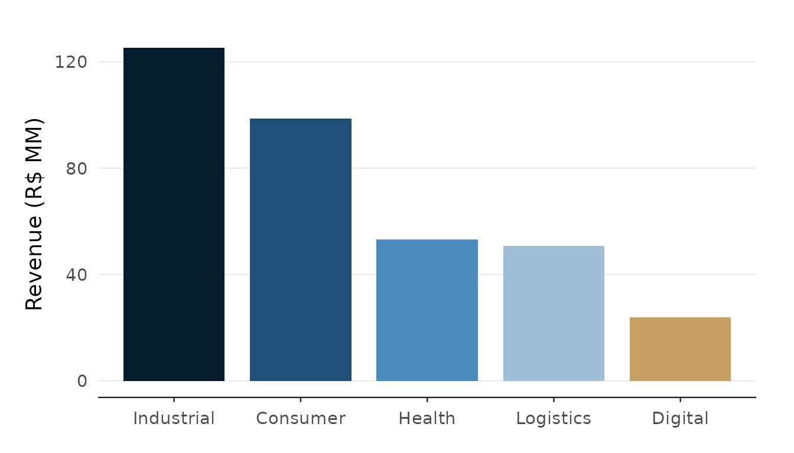
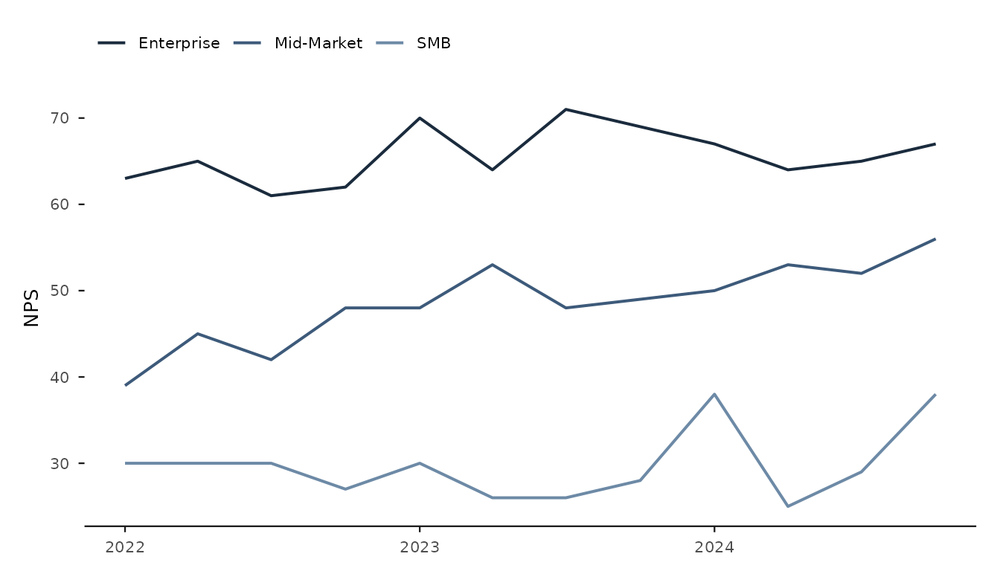
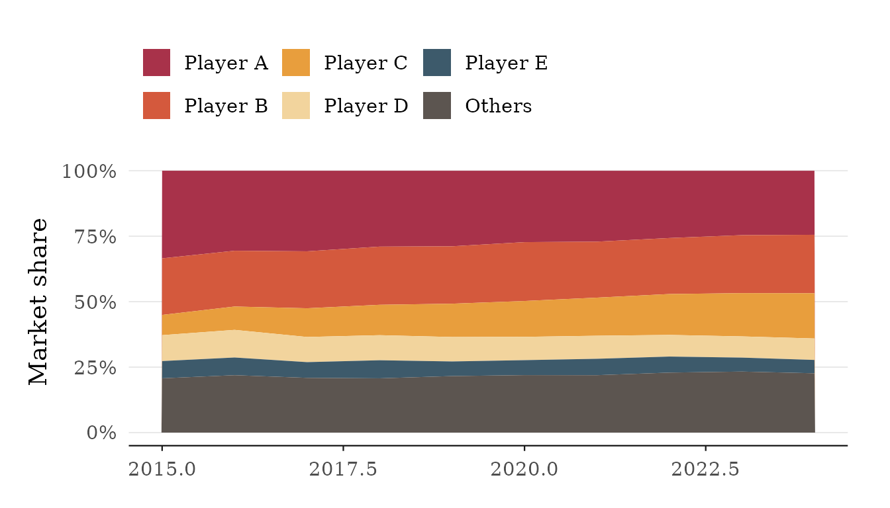
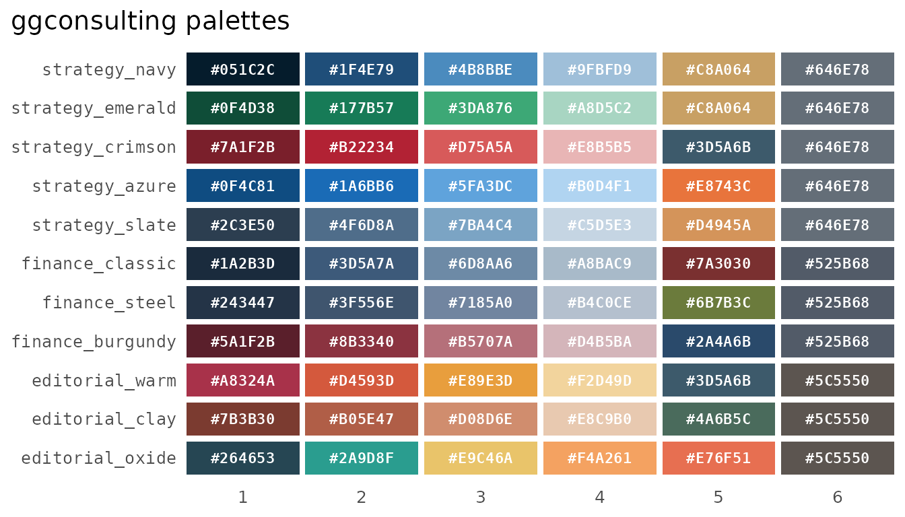
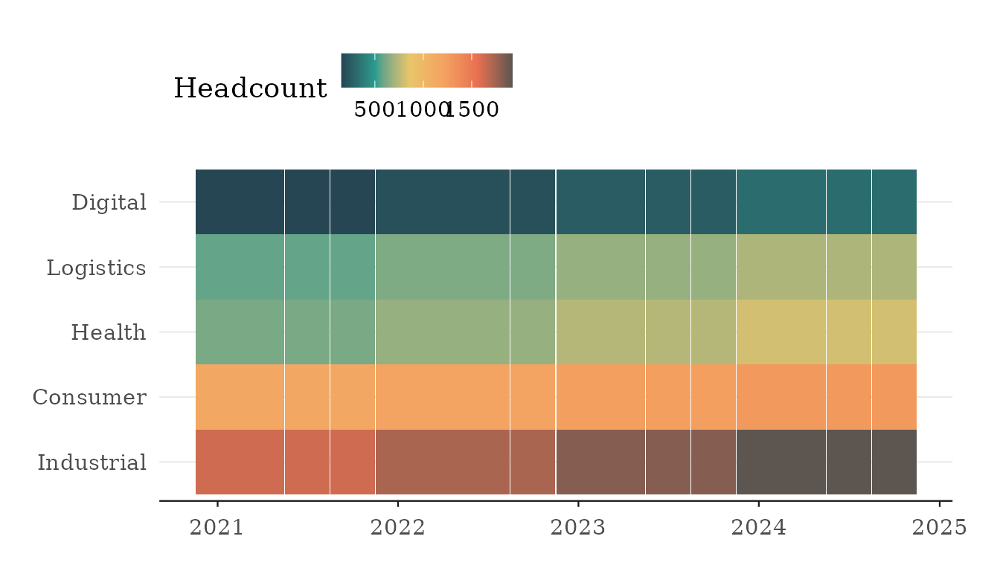

The package ships three theme presets —
theme_strategy(), theme_finance(), and
theme_editorial() — and colour scales backed by the
built-in palettes. This article is a quick gallery: one small plot per
theme, then the scales. All plots use the bundled datasets.
Strategy
theme_strategy() is the minimal, whitespace-heavy preset
with a navy palette by default.
bu_last <- subset(bu_quarterly, quarter == max(quarter))
ggplot(
bu_last,
aes(reorder(business_unit, -revenue_brl), revenue_brl, fill = business_unit)
) +
ct_col() +
scale_fill_ct() +
theme_strategy() +
guides(fill = "none") +
labs(x = NULL, y = "Revenue (R$ MM)")
Finance
theme_finance() switches to serif type and denser
defaults, tuned for reports.
ggplot(client_nps, aes(quarter, nps, colour = segment)) +
ct_line() +
scale_color_ct("finance_classic") +
theme_finance() +
labs(colour = NULL, x = NULL, y = "NPS")
Editorial
theme_editorial() uses serif type with a warmer palette,
for analyst notes and commentary.
ggplot(market_share, aes(year, share, fill = company)) +
geom_area() +
scale_fill_ct("editorial_warm") +
scale_y_continuous(labels = fmt_pct(decimals = 0)) +
theme_editorial() +
labs(fill = NULL, x = NULL, y = "Market share")
Scales and palettes
scale_color_ct() / scale_fill_ct() are
discrete and map levels in palette order, interpolating with a warning
past six levels. The _c variants are continuous and
gradient across the palette. Any palette name — or any character vector
of colours — pairs with any theme.

ggplot(bu_quarterly, aes(quarter, business_unit, fill = headcount)) +
geom_tile(linewidth = 0) +
scale_fill_ct_c("editorial_oxide") +
theme_editorial() +
labs(x = NULL, y = NULL, fill = "Headcount")
See the reference pages for reverse (discrete) and
direction (continuous).